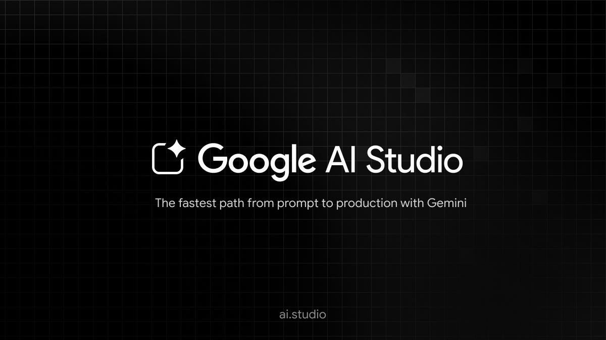

Սեղմելով այս հղմանը, կարող եք անցնել արհեստական բանականության միջավայր

AI studio անցնելու համար սեղմեք նկարին:

Chat GPT
ChatGPT is a generative artificial intelligence chatbot developed by OpenAI. It was released in November 2022. It uses large language models—specifically generative pre-trained transformers (GPTs)—to generate text, speech, and images in response to user prompts. It is credited with accelerating the AI boom, an ongoing period marked by rapid investment and public attention toward the field of artificial intelligence (AI).[4] OpenAI operates the service on a freemium model. Users can interact with ChatGPT through text, audio, and image prompts. ChatGPT was quickly adopted, reaching 100 million monthly active users two months after its release and 900 million weekly active users in February 2026.[5][6] It has been lauded for its potential to transform numerous professional fields, and has instigated public debate about the nature of creativity and the future of knowledge work. The chatbot has also been criticized for its limitations and potential for unethical use. It can generate plausible-sounding but incorrect or nonsensical answers, known as hallucinations. Biases in its training data have been reflected in its responses. The chatbot can facilitate academic dishonesty, generate misinformation, and create malicious code. The ethics of its development, particularly the use of copyrighted content as training data, have also drawn controversy.Gemini
Gemini (also known as Google Gemini and formerly known as Bard) is a generative artificial intelligence chatbot and virtual assistant developed by Google. It is powered by the family of large language models (LLMs) of the same name, after previously being based on LaMDA and PaLM 2. The Gemini architecture is trained natively on multiple data types, allowing the models to process and generate text, computer code, images, audio, and video simultaneously. Google distributes the technology in varying capacities, ranging from efficient on-device versions ("Nano") and cost-effective, high-throughput variants ("Flash") to high-compute models designed for complex reasoning ("Pro" and "Ultra"). The 1.5 and 3 model generations introduced extended context windows, enabling the analysis of large datasets such as entire codebases, long-form videos, or extensive document archives in a single prompt. Gemini was first announced on December 6, 2023, and replaced existing Google branding for AI services. In February 2024, the Bard chatbot was renamed Gemini, and the "Duet AI" branding for Google Cloud and Workspace was retired in favor of the Gemini identifier. The models integrate into the Google ecosystem through the Gemini mobile app, which functions as an overlay assistant on Android devices, and through the Vertex AI platform for third-party developers. The release of Gemini has generated technical praise and public controversy. Commentators have highlighted the models' benchmarks in coding and retrieval tasks as competitive with OpenAI's GPT-4 and GPT-5. However, the product launch faced criticism regarding the reliability of its outputs. In early 2024, Google suspended the model's ability to generate images of people after users reported historical inaccuracies and bias in its depictions of human subjects. Subsequent updates, including the Gemini 1.5 and 3 series released throughout 2025, focused on reducing hallucinations, improving latency, and enhancing agentic capabilities for autonomous research and software development.